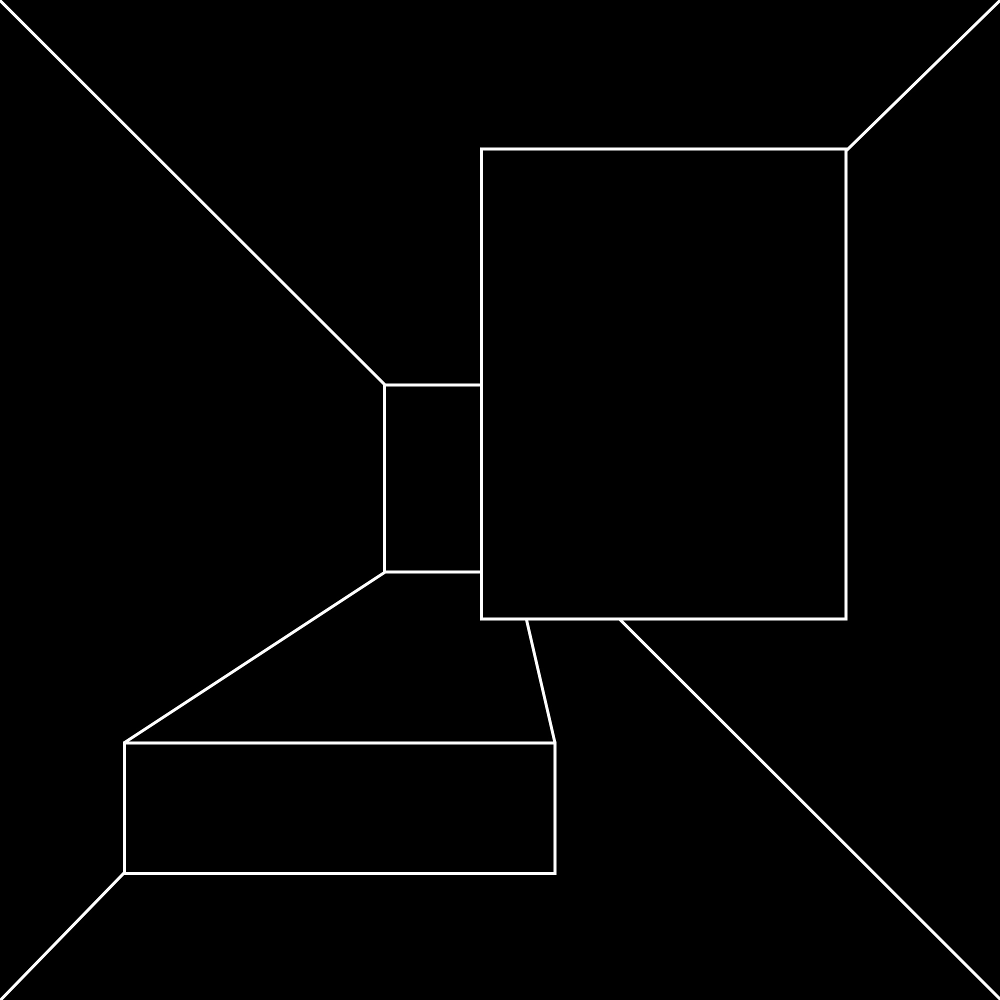

But there is no book I know of on the subject of how poems begin. How can the origin be traced when there is no form or shape that precedes it to trace?
It is exactly like tracing the moment of the big bang—we can go back to a nanosecond before the beginning, before the universe burst into being,
but we can’t go back to the precise beginning because that would precede knowledge, and we can’t “know” anything before “knowing” itself was born.